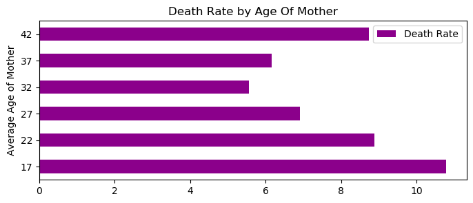
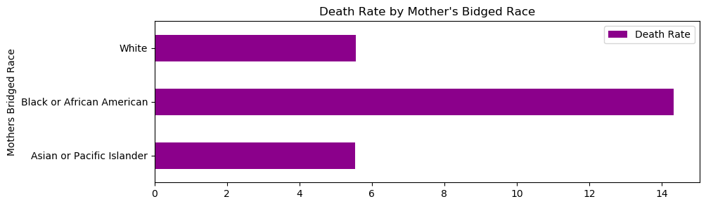

Machine Learning
Our questions:
1. How do maternal characteristic impact the APGAR score? Or Could we, based on the maternal
characteristics, predict APGAR score?
2. How do labor characteristics impact the APGAR score? Or Could we, based on the labor
characteristics, predict APGAR score?
3. How do delivery characteristics impact the APGAR score? Or Could we, based on the delivery
characteristics, predict APGAR score?
Some Additional Information: Key code values translated.
Maternal characteristics: Mother education code "1" = 8th grade or less "2" = 9th through 12th grade with no diploma "3" = High school graduate or GED completed "4" = Some college credit, but not a degree "5" = Associate degree (AA, AS) "6" = Bachelor's degree (BA, AB, BS) "7" = Master's degree (MA, MS) "8" = Doctorate (PHD, EdD) or Professional Degree (MD, Mother weight gain code • The number indicates the weight gained in lbs by the mother Pre-pregnancy diabetes “1” = Yes “2” = No “9” = Unknown or Not Stated Pre-pregnancy Hypertension Code “1” = Yes “2” = No “9” = Unknown or Not Stated APGAR score code • APGAR score code represents the score recorded at 5 minutes after birth, in single increments. • The higher the score, the better the baby is doing after birth. A score of 7, 8, or 9 is normal and is a sign that the newborn is in good health.
Machine learning factors we used included Maternal specific factors. All factors for the graphs were using 2017 data.
Age of the Mother

The Mother's Education Level
Death Rate by Mother's Bridged Race

Death Rate by Mother's Bridged Race and Hispanic Origin